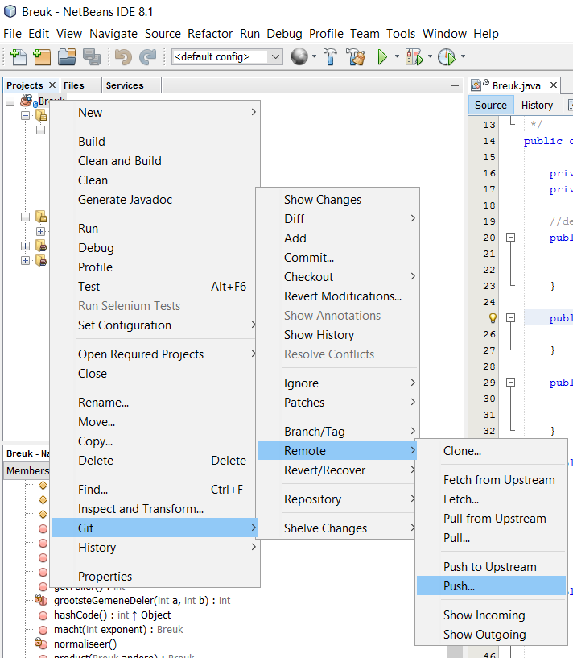

GitHub: enkele tips
GitHub op command line
Hier vind je een cheat sheet voor GitHub.
GitHub via NetBeans
-
Als je in GitHub een repository hebt, dan is het het makkelijkst om dit te clonen met HTTPS.
Standaard vind je bij de knop 'Clone or download' echter SSH in plaats van HTTPS.
-
Kies rechtsboven het actieve venster voor 'Use HTTPS'.
-
Copieer het gegeven adres (gebruik het icoontje met clipboard); dit is de Repository URL.
-
Open dan NetBeans, en kies in het menu 'Team' voor 'Git' - 'clone'.
-
Daar kopieer je de Repository URL in die je uit GitHub haalde. User en password zijn die van je UGent-account.
-
Als je aan het project iets aanpast, dan komen er extra icoontjes bij in het Projects-venster.
-
Om deze aanpassingen door te geven aan GitHub, kies je voor 'commit'.
Dit kan zowel via het menu 'Team' - 'Commit...'
als via het contextmenu van je project.
-
Als de wijzigingen zijn doorgegeven, verdwijnen de extra icoontjes in het Projects-venster.
- Het hele project binnenhalen (pull) of plaatsen op GitHub (push) kan via diezelfde (dubbele) weg; kies voor het menuitem 'Remote'.
